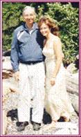

|
CLICK
|
|
to close this page.
|
|
A TRIBUTE TO MY CARE-GIVER
(Granny is Viola; Grandpa is Fred -
this is an extract from her JEWELS book.)
|
|
Why is ‘Grandpa’ Granny’s favourite preacher? Is it because he sings beautifully? Alas, Grandpa cannot hold a tune. Is it because he is an outstanding preacher? Grandpa has never made front-page headlines. Granny estimates that out of their fifty-three years of marriage (at the time of writing this book), she has listened to the same preacher for approximately thirty years. Very few members in a congregation can boast that they have had the same minister for thirty years! Obviously, she loves him best because he is her husband. When he made a commitment to take on the responsibility of caring for a wife “in sickness and in health . . . until death us do part,” he meant it. Ever since Granny contracted polio in 1948 and struggled as a paraplegic, Grandpa has been by her side. As Granny says, “Yes, my husband is grouchy with me at times; sometimes I deserve it - sometimes I don’t. But never – never has he ever been irritable with me because of my physical limitations. In that area of our lives, he has been as strong as the Rock of Gibraltar: caring for me, helping me, loving me in spite of my many infirmities.” Granny could go on forever, but if you read her book Gold in Life’s Hourglass, you will learn more about Grandpa’s remarkable character. In 1993, Granny entered a Valentine’s contest sponsored by the local newspaper. She won second prize for the following submission about Grandpa.
As a teenager, I knew exactly what I wanted in a husband. My Knight in shining armour would sweep me off my feet. He would quote and compose romantic poetry and sing like an opera star. The fourth requirement concerned his vocation: he had to be a clergyman. Did he sweep me off my feet? Hardly. We met in a mundane dry-cleaning plant amid stacks and stacks of drab army uniforms. At the time, he was a steam engineer, dressed in grubby, greasy clothes - a far cry from a distinguished-looking man of the cloth. Could he quote poetry? Good grief! He didn’t even know who Wordsworth, Longfellow, or the Brownings were. As for singing - total disaster. There was only one glimmer of hope left: his long-range goals included studying for the ministry, and several years after our marriage, he did become a clergyman. I soon discovered that love has many forms and cannot be stereotyped. After two years of marriage, I contracted polio and became a paraplegic. My husband has literally swept me “off my feet” for years. He has taken me in his big, strong arms and carried me over mud, ice, and snow. He has carried me up hills and stairs. If chivalry is part of Knighthood, then he ought to be knighted for he has never complained or murmured about disability disadvantages. The Brownings composed beautiful, poetical sentiments about love. My husband has “lived” the poetry of love these forty-six years. Every day of our lives has been fashioned into a romantic life-long love poem that has all the glamour and quintessence penned by the Brownings. As for singing like an opera star, he had higher aspirations than operatic arias. He fashioned golden threads of royalty into the fabric of my life. He claimed his wife, placed her in his home, and crowned her Queen. What a coronation! And instead of crowning himself as King - making himself co-equal - he chose, instead, to be a most devoted and loyal subject, content to stand on the sidelines. When his Queen performed as the star on middle stage, he stood back to admire, to applaud, to cheer, and to love the woman who was first and foremost in his heart and affection. (As far as I am concerned, he is a king, a regal and royal husband.) We’ve brought a lot of gold into each other’s lives, and who can measure which one has made the other the richer?
MEETING JACLYN SMITH - TELEVISION STAR OF "CHARLIE'S ANGELS"
 In 1999, we were parked with our motorhome at Porteau Cove. At the far end of the campsite, filming was going on. In his daily walk, Fred chanced on this group, and being curious, he asked about it. They explained that a film was being shot about the story of an old fisherman, and Jaclyn Smith was the featured star. With boldness, Fred asked if he could meet Jaclyn. And he did! He mentioned something about my encounter with polio (Jaclyn works with organizations which help physically-handicapped children), and she said she would like to meet me, too. He came back to the motorhome to tell about meeting her, and I said, "Give her a copy of my book." So he took a copy of GOLD IN LIFE'S HOURGLASS to her.
He told her that it would be impossible to take the wheelchair down the long length of bumpy road to meet her. But Jaclyn arranged for one of the filming crew's big vans to take me to meet her. Well, I was a horrid mess! My hair was unruly; my camping clothes, old and shabby. And I was going to meet a famous star like Jaclyn? The driver lifted me and the wheelchair into the van. When we got to the site, the filming crew, as well as Jaclyn, had already moved to the next location - several miles down the road. My driver had to take the rest of the crew there, so I was left on the side of the road in my wheelchair to await further transportation. Finally, another van arrived, and again I was lifted in, and off we went. This filming site was on a precipitous hillside, but finally a level spot was found for the wheelchair. The former campgrounds were set up for the film: old buildings were remade into a rickety old hotel; a little church; plus a saloon, store, etc. And yes, finally Jaclyn came over to speak with me. Before meeting her, I mused as to how I would interact with a TV celebrity. I decided a neutral course was best for me, because I really couldn't exclaim too much about her acting when I had hardly ever seen her on TV. So we chatted about family, her work with the disabled, etc. When I drew the attention of Jaclyn and her assistant to my wonderful care-giver - Fred - who had looked after me since my disability in 1948, they were impressed with such unwavering devotion.
In the course of our conversation, I mentioned something about how great clothing is nowadays for travelling - just roll up the T-shirts - and there is no need to iron them. K-Mart stores promote Jaclyn Smith's line of clothing. (However, K-Marts in Canada have sold out to Zellers by now.) "When I get home," Jaclyn said, "I will send you some of my line of clothing. I think you will find it to be very suitable for your disability. However, it will be a month or so until I get back to Los Angeles." I was skeptical. I mused: this lady must have thousands of people to interact with, work schedules, etc. Why should she bother with an older lady in Canada who isn't even a fan of hers? A month following our meeting, a Federal Express van pulled up at our condo. A big parcel of clothing had arrived from Los Angeles. Yes - from Jaclyn Smith! There were three beautiful outfits: patterned and fancy tops with matching plain-coloured slacks. Wow! And this is the note she enclosed with the clothing:
"Dear Viola: It was wonderful meeting you and your adorable husband. I just got home and can now read your book. Thank you for giving it to me. I hope you like these clothes from my line. I know you will look beautiful in them. A big hello to your sweet husband. Much love, Jaclyn."
NOTE: Of particular note in this write-up is the profound admiration Jaclyn Smith had for my care-giver, Fred. She said that I was fortunate to have had my spouse stay faithfully with me all these years because she knew of many instances where families split up when one had a disability. Jaclyn was very impressed with Fred and his loving care for me.
By the way, I was, too!
THE LAST CHRISTMAS CARD
I DESIGNED COMPUTER-CARDS FOR MANY SPECIAL OCCASIONS.
THE ORIGINAL CARD WAS SET UP WITH INTRICATE GRAPHICS,
SO THIS IS NOT AN EXACT DUPLICATE.
I DID NOT MAKE UP THE WORDS - BUT I ENDORSE WHOLE-HEARTEDLY
EVERY SENTIMENT EXPRESSED.
()
() I ()
() guess ()
() I wondered ()
() if I would ever ()
() find the man of my ()
() dreams. I didn’t know ()
() who he might be, or when ()
() it might happen, but I did know ()
() this: the man of my dreams couldn’t ()
() be just anyone. He had to be someone ()
() The man of my dreams wasn't going to ()
() be easy to find. He had to be a lot of things: ()
() someone with whom I was able to be sincere ()
() and communicative and completely honest, just ()
() the way I wanted him to be with me. Sometimes he ()
() would be outrageous and funny and wonderful, and yet ()
() he would be gentle and genuine and always there - in good ()
() times and bad. He would be very reassuring and supportive. ()
() The man of my dreams had to have a warm heart, a sensitive soul ()
() and be full of fun and friendship and shared feelings. It seemed like the ()
()
man of my dreams was just a figment of my imagination ... until you came along. ()
()()()()()()()()()()()()()()()()()()()()()()()()()()()()()()()()()()()()()()()()()()()()()()()()()()()()()
|
And then when you did -
I discovered
that you are…
EVEN MORE WONDERFUL
than I imagined any could be.
|
|
I LOVE YOU WITH ALL MY HEART!
|
CLICK
|
|
to close this page.
|